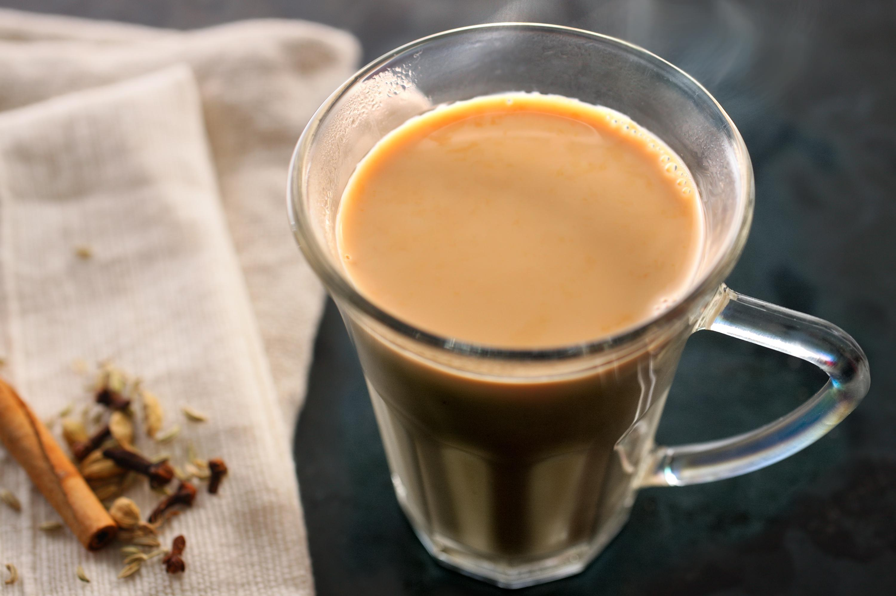

How to make Karak !
I found this tea on a recent trip to the UAE but have learned that it is popular all over the Middle East. Roughly translated, karak chai means 'strong tea'. It differs from Masala chai by using fewer spices, slightly stronger tea, evaporated milk, and lump sugar. I make up a big batch in the morning and drink it throughout the day. It's nice chilled or reheated.
Here is what you will need
- 2 cups water
- 2 teaspoons Black tea loose
- 1/2 teaspoon cardamom crushed or ground
- 2 cups milk regular, evaporate or condensed
- sugar to taste
- cinnamon, saffron, ginger or cloves optional
Instructions
- Boil the water in a saucepan with the loose black tea and cardamom.
- Once it boils, add the milk and sugar if you are using. Also if you are adding additional spices, add them in now.
- Boil again and then simmer, and repeat two more times
- Pour the tea into a cup through a strainer.
- Savor your delicious Qatari karak tea